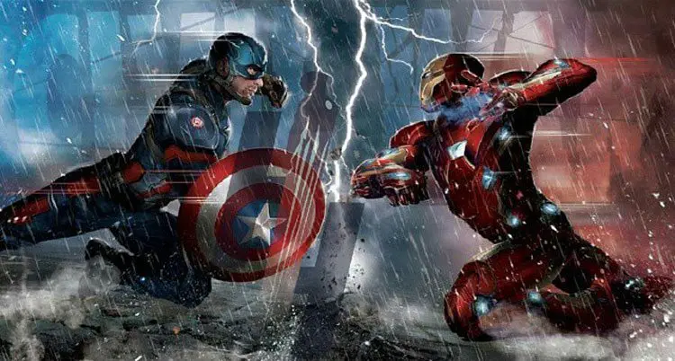

Mapeado Imágenes HTML
Mapeado hace referencia a la posibilidad de asingar una región o zona de una imagen, para que cuando
seleccionemos dicha región, nos permita ir a un vínculo de una web externa, interna o sección/documento
al que nosotros queramos.
Utilizaremos para poder hacer el mapeado en html, una etiqueta que se llama map.
La etiqueta map, nos permitirá localizar e identificar zonas en imágenes para poder etiquetar y redireccionar
dicha área a un link o zona que nosotros.
La estructura para hacer un mapeado, estará formada por las siguientes etiquetas y atributos:
- map: esta etiqueta indica que vamos a usar y establecer un mapeado en una imagen
- name: es un atributo que me asigna un nombre al mapa que debe de coincidir con el que hemos
establecido en el usemap.
- usemap: es un atributo que se añade en la imagen para indicar que vamos a usar un mapeado.
Se suele indicar de la siguiente manera: usemap=#nombre_que_queramos
- shape: especificar la región que queremos mapear. Existen 4 tipo de regiones:
Default, Rect, Circle, Poly.
- Default: es un atributo que indica que la región del mapeado es por defecto.
- Rect: es un atributo que indica que la región del mapeado es rectangular. Para poder
establecer que el área es rectangular, utilizaremos unas coordenadas que vienen dadas por el puntos
X,Y del vértice superior izquierdo de la imagen, y el punto X,Y del vértice inferior derecho.
- Circle: es un atributo que indica que la región del mapeado es de forma circular. Para poder
establecer el área, se toma un punto central X,Y y se le asigna un valor del radio de la circunferencia.
- Poly: es un atributo que indica que la región del mapeado va a tener forma poligonal.Para poder
establecer el área, se debe tomar como mínimo 3 puntos de coordenadas X,Y, y para poder establecer sus
valores, se seguirá el sentido de las agujas del reloj (izq a der)
- Coordenadas: indican la posición en la pantalla del área a mapear.
Ejemplo de mapeado imágenes
